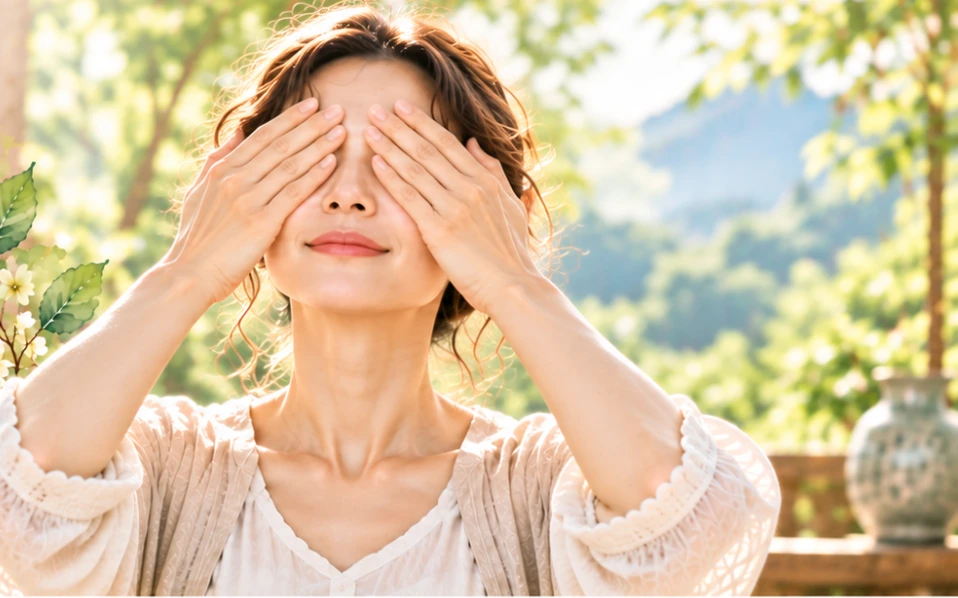

現在的人在生活上大量接觸電腦、手機、電視等產品，眼睛長期是處於過度使用的狀況，容易造成眼睛酸澀或是視力退化的現象，如此朝傷暮損又不知補養方法的話，就會讓眼睛受到很大的傷害，除了改變不良生活習慣，和攝取相關營養素之外，還有哪些簡單的動作呢？
【熨眼】
「熨眼」可以說是最簡單而且又不花錢的保養方式，每天有空就可以練習，每次只需要花一分鐘的時間，不僅可以幫助眼睛放鬆休息，還可以促進眼周血液循環，如古書所記載的：常做「熨眼」可以令人目明。
作法：先將雙手手掌摩擦生熱，再將雙手手掌迅速覆蓋在雙眼，此時眼睛會立即感受到手掌的溫度，舒服的感覺就像是在做熱敷一般，當熱度明顯降低的時候，再用手指指腹的地方，繞著眉毛和眼眶的周圍輕輕按壓，有感覺到特別痠痛的位置，就稍微停留久一點，來回按摩完一圈之後，再將手掌摩擦生熱繼續熨眼，整個動作可以重覆做個好幾回合。
眼部周圍有許多的穴道，不論是從眉頭、眉中還是到眉尾都有，通常在眉毛內外兩側的凹陷處、眼角內側的凹陷處，眼眶下方的位置，都是可以稍微加強按揉的地方，千萬不可以對眼球直接施壓，常常按摩眼部穴道的話，可以舒緩眼睛的疲勞。
注意事項：不論是熨目還是按摩，都要注意手部的清潔，進行的時候，力道不宜過大，速度要緩慢，最重要的是：隱形眼鏡要記得拿掉。
【轉睛】
也就是我們常說的轉眼球，可以舒緩眼睛疲勞，是自古以來就有的保養方法。
作法：先閉上雙眼，然後睜開眼睛，眼睛分別由左、上、右、下等四個方向望去，每個方向都要稍微停留一秒左右，不要直接快速轉動，緩慢繞完一圈之後就閉起雙眼。接著再睜開雙眼，這次眼睛則是分別由右、上、左、下等四個方向進行，同樣是在每個方向稍微停留一秒左右，千萬不可直接快速轉動，緩慢繞完一圈之後就閉起雙眼。這個動作可以重覆3次。
注意事項：動作要輕柔緩慢，千萬不可直接快速轉動眼球，上、下、左、右四個方向都需稍微停頓一下才行。
眼睛被稱為是靈魂之窗，自古以來就有許多的智者認為「眼睛」是心之門，神之竅，如果要修心養性的話，就要從眼睛先來著手，並以弩弓（也就是現在的十字弓）為比喻來做說明：「心是樞機，目為盜賊，欲伏其心，先攝其目。蓋弩之發動在機，心之緣引在目，機不動則弩住，目不動則心住。」所以要降伏其心的話，就要先從雙眼下手。
所以千萬不要小看「熨眼」這個簡單的動作，常常練習不僅可以保養眼睛，還可以同時修心養神，真的可以說是一舉數得，難怪古聖曾經提醒過：「神傳於目，而目則有胞 ，閉之可以養神也；禍出於口，而口則有唇，闔之可以防禍也。」
今天是不是又學會一招了呢，別光只是看，看完之後也要記得動呦！
身安是福、心安即氣，身安心安、福氣自來。